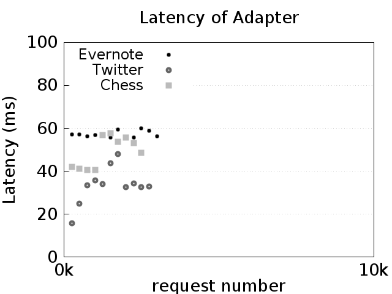
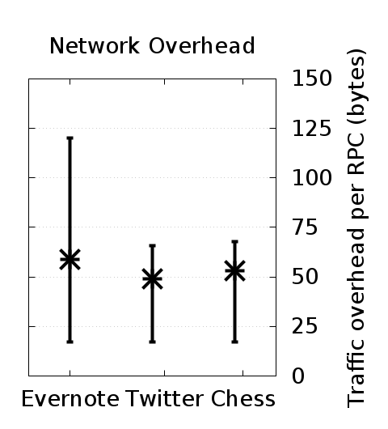
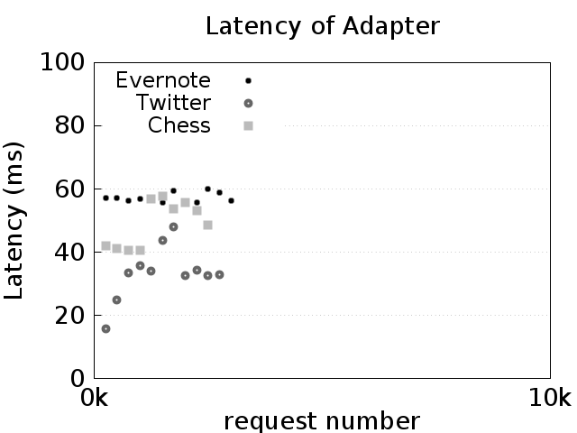
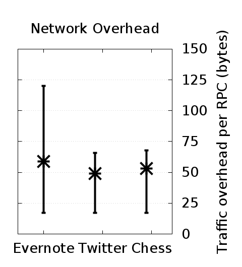

» Benchmarks
In this page we describe the benchmark suite of Whip, what it measures, and how to run these benchmarks locally.
Note: This page references details on the design of Whip without introduction. If you're unfamiliar with Whip, you may want to try the Demo first.
» Overview
Whip comes with a benchmark test suite that contains three real-world case studies. The case studies are:
- Evernote: an Evernote Thrift API client. You can find more information about the Evernote API at https://dev.evernote.com/doc/.
- Chess: a SOAP-based Xfcc correspondence chess program. You can find more information about the Xfcc protocol at http://xfcc.org/.
- Twitter: a REST-like Twitter API client. You can find more information about the Twitter API at https://dev.twitter.com/overview/api.
To evaluate how Whip impacts the performance of the services it enhances, we designed our benchmarks to analyze the time, memory, and network overhead due to Whip.
» Experimental Setup
We do not use the actual third-party services for our experiments but instead mock their behavior, i.e., we simulate their behavior with pre-computed responses for each request. This is for two reasons:
- mocking services removes several sources of measurement noise, like service latency variation from background request load, and
- performing our experiments on third-party production servers violates their terms of use.
We collect the following measurements for each test. First, we record the time to perform each request in the test suite and receive a reply for (1) the test client alone, and (2) the client enhanced with an adapter. The difference between these two measurements yields the latency due to the client’s adapter per request (adapter latency). Second, we record the amount of memory (RAM and hard-disk) used by the client’s adapter. Finally, we measure the adapter-to-adapter traffic (not including the original request or reply) in the TCP stream.
Operations that identify a service entry always introduce the service entry (i.e., always use a new contract index and thus create new service entries in the adapters’ local state, which maximizes local state size).
» Running the Benchmarks
To run the benchmarks, you will need to have a recent version of Docker (at least version v1.13.0) installed on your computer. For instructions on downloading and installing Docker, please see https://www.docker.com/get-docker.
Once Docker is installed, you will need to clone the Whip repository and the directory we will be using is benchmarks. You can clone the repository and access that directory with the following two commands:
$ git clone https://github.com/wayetender/whip.git
Cloning into 'whip'...
...
$ cd whip/benchmarks
» Directory Structure
The benchmarks directory is structured as follows:
.
├── docker-compose.yml
├── README.md
├── evernote
│ └── ...
├── chess
│ └── ...
├── twitter
│ └── ...
└── parse_results
└── ...
The benchmarks are run through Docker Compose. The docker-compose.yml file describes the containers that will be run. In this suite, there are four containers:
- evernote: the Evernote test benchmark
- chess: the Chess test benchmark
- twitter: the Twitter test benchmark
- parse_results: produces human-readable plots from raw benchmark data
» Running with Docker Compose
To run the benchmarks, simply set the NUM_OPS environmental variable to the number of operations you want the benchmarks to perform and then run the docker-compose up --build command. The docker-compose.yml file is parameterized by the NUM_OPS variable, which sets the number of operations to run per benchmark. In the "Anatomy of the Benchmarks" section, we describe the benchmark's operation in more detail.
Below is an example run and its output with 3,000 operations per benchmark (9,000 operations in total).
$ NUM_OPS=3000 docker-compose up --build
Building parse_results
...
Attaching to benchmarks_parse_results_1, benchmarks_twitter_1, benchmarks_evernote_1, benchmarks_chess_1
evernote_1 | Starting tests
evernote_1 | Done
benchmarks_evernote_1 exited with code 0
chess_1 | Starting tests
chess_1 | Done
benchmarks_chess_1 exited with code 0
twitter_1 | Starting tests
twitter_1 | Done
benchmarks_twitter_1 exited with code 0
parse_results_1 |
parse_results_1 | ---------------------------------
parse_results_1 | Benchmarks Complete!
parse_results_1 | ---------------------------------
parse_results_1 |
parse_results_1 | Please check the results/images directory.
benchmarks_parse_results_1 exited with code 0
After running the benchmark, you can check the results/images directory inside the benchmarks directory to find the following generated images:
  
 
memorychart.png: This chart shows the resident set size of the adapter and the dashed lines show the sizes of the store on disk. In general, the memory usage of the adapters should level off to be constant, while the store size (shown in dashed lines) should increase linearly.throughputchart.png: This chart shows the latency of the adapter as the number of requests increases. Each point is the average of the 250 requests around it. In general, the latency of all three benchmarks should not increase as the number of requests increases. The variance, however, may be high depending on the Docker host machine setup.networkchart.png: This chart shows the average amount of adapter traffic per operation call. Vertical bars indicate 95% confidence intervals. This chart should remain relatively fixed, with Evernote producing roughly 75 bytes of overhead on average per operation, and Twitter and Chess producing roughly 50 bytes of overhead per operation.
With the exception of the networkchart.png chart, the generated results will vary dramatically in absolute numbers depending on the number of resources given.
Note: In the ICFP paper, the number of operations chosen was 10,000 (i.e., NUM_OPS=10000). That trial will take about 45 minutes to an hour to complete, depending on the resources available to the Docker containers.
Warning: Due to bucketing of the raw output data, it is recommended to run the benchmarks with at least 500 operations per benchmark (i.e., NUM_OPS=500), otherwise there will not be enough aggregate data to plot an image.
» Anatomy of the Benchmarks
In this section, we describe the structure and operation of the benchmarks.
Each benchmark has a common file structure, comprised of the following files:
Dockerfile: This is the description of how to build the benchmark container. Each container starts from a base Whip container image, and installs benchmark-specific libraries and copies the source code needed to run the benchmark into the container.run.sh: This is the script that runs the benchmark. In general, the script will wait for a previous benchmark to complete, then start the server and adapter, then run the test client. Finally the raw benchmark telemetry is copied to theresultsvolume.server.py: This file contains the mock server implementation and also starts the adapter in a subprocess (so that it can track its memory usage).test.py: This is the test client which which will initiate the client requests and track end-to-end latency.adapter.yaml: This is the Whip adapter configuration file. Inspect it to see what proxies are being set up and how the contracts are wired together to their network protocols.{BENCHMARK_NAME}.whip: This is the Whip contract file.
Caution: For convenience, TLS verification has been disabled on the test clients as it can be difficult to install certificates on Docker hosts. For more information, see the Docker documentation on the topic. Once the certificate is installed (and placed in the server.pem file for the mock server), you can remove the verification bypass options in the test.py file.
Each benchmark produces a variety of telemetry data, scattered between multiple programs. The raw data files are stored centrally in the results directory when the benchmark completes. Within each results subdirectory (given by the name of the benchmark), the following benchmark raw data files are created:
bytes: Each line corresponds to the number of bytes of Whip-specific information in an enhanced message. The adapter computes this information (i.e., inwhip/src/adapter/proxy.py) by computing the byte size difference between the original unenhanced message and the Whip-enhanced message.clientcalls: Each line corresponds to the number of milliseconds it took for a client request to complete from beginning to end. Thetest.pytest client computes this information by measuring the delay of invoking an RPC.memory: Each line corresponds to a periodic reading of the adapter process's resident set size (memory usage) and the size of the store file. The file is comma separated and the columns are, in order, the memory usage of the adapter, the file size of the store file, and the number of requests received at the time of the reading. Theserver.pyfile computes this information.times: Each line corresponds to the number of milliseconds it took for the mock server to respond to a Whip-proxied request. It is similar to the data in theclientcallsfile but is only the portion of time the Whip adapter spent waiting for the server to respond. The adapter computes this information by measuring the delay of invoking the RPC on the mock server while it is proxying a client request.
With this information, the parse_results container uses the parse.py script to compute the final aggregated and joined data that makes up the resulting images (computed by the gen_charts.sh script).